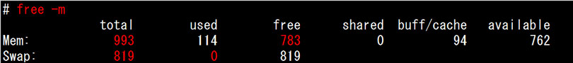
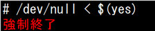
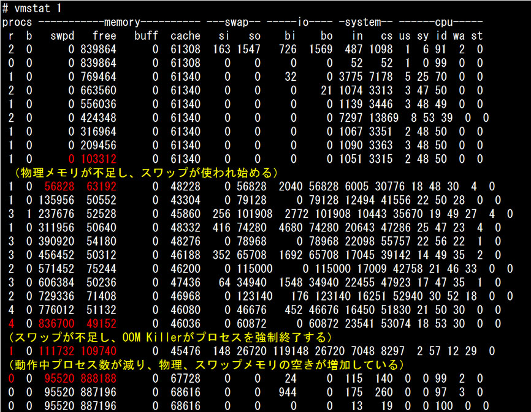
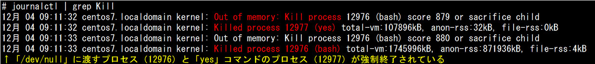
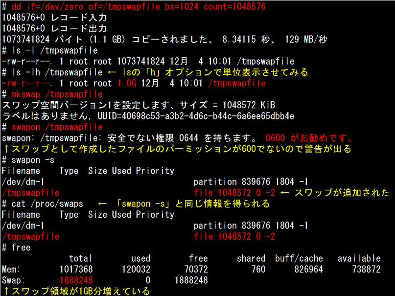
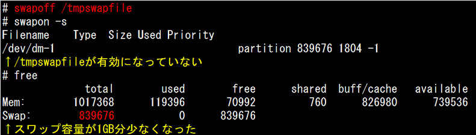

- 問題ID : 21951 ファイルシステムの設定とマウント
- 履歴
正解
mkswap
解説
スワップ領域はハードディスク上に置かれる仮想的なメモリ領域で、物理メモリに入りきらなくなったデータを退避するために使われます。この仕組みにより、物理メモリの容量が少々足らない場合にもシステムが動作を維持することができます。
スワップ領域を作成するコマンドは
・mkswap
です。
引数にデバイスファイルかスワップファイルとするファイルを指定すると、スワップが作成されます。
他の選択肢について解説します。
・swapon
スワップを有効にするコマンドです。
mkswap で作成しただけではスワップ領域は有効になっていません。作成した領域を引数に与え、swapon を実行するとそのスワップ領域が有効になります。
ここでは、swapon はスワップを作る機能は持っていないため、誤りです。
・swapoff
スワップを無効にするコマンドです。
既に有効になっているスワップ領域を引数に与えると、その領域を無効にします。
ここでは、swapon はスワップを作る機能は持っていないため、誤りです。
・mkfs
各種ファイルシステムを作ることができるコマンドですが、スワップは特別な領域で、厳密にはファイルシステムではないため、mkfs で作ることはできません。したがって誤りです。
参考
システムのメモリ利用率が非常に高い状態で運用を続けると、カーネルがメモリ不足と認識した時に発動するOOM Killer（Out Of Memory Killer：メモリ不足時の自動プロセス停止機能）によって、プロセスの強制終了処理が実行されます。
OOM Killerは独自の基準でプロセスを強制終了するため、意図しない重要なプロセスが強制終了される可能性があります。こういった状態を回避するためには
・重要なプロセスに対して、OOM Killerのプロセス停止優先度を低く設定する ※ただし、プロセス番号が変わると都度設定が必要となる
・メモリ（物理、スワップ）を十分に用意する
という対策があります。
し
かし、突然のメモリ利用率増加に対して取れる緊急対策の手段としては、スワップ領域を増やすのが現実的です。スワップ領域はハードディスク上に作成される
のでアクセス速度は非常に遅いですが、更新頻度の低いメモリ領域をスワップに移動することで物理メモリの空きを確保し、システムの継続運用を可能とするこ
とができます。
以下のように、物理メモリ1GB、スワップ領域として820MB確保している環境があります。この時点では物理メモリの空きが783MBあり、またスワップ領域も使われていません。
※freeコマンドに「-m」オプションを指定すると、MiB単位での表示になります。

この状態で以下のようにメモリを大量に使用するプロセスを実行します。
（yes コマンドは「y」を延々標準出力に出力するコマンドですので、/dev/null（書き込んだデータは捨て、読みだしてもEOFを返す特殊ファイル）に標準入力から「y」を渡し続ける事になります。）
すると、ある程度実行した後、プロセスが強制終了されてしまいます。

この時、別の端末から「vmstat 1」により継続的に監視すると、以下のように「物理メモリ不足→スワップ領域不足→OOM Killerによるプロセス強制終了→メモリ確保」という流れになっていることがわかります。

ログを確認すると、OOM Killerが発動してメモリを大量に使用しているプロセスを強制終了したことがわかります。

このようなメモリの利用率の急激な増加への対処として、スワップ領域として使用するファイルを作成し、スワップ領域として有効化します。
作成、有効化の手順は以下のとおりです。
1.スワップ領域として使いたいサイズのファイルを作成する。
2.mkswap コマンドで、作成したファイルをスワップ領域として初期化する。
3.swapon コマンドで、作成したファイルをスワップ領域として有効化する
こ
の時、作成したファイルのパーミッションは600（所有者＝rootのみ読み書き可）とすることが推奨されます。以下の例ではデフォルトの644（所有者
以外も読み取り可）としていますが、この場合ファイルに書き込まれたメモリの内容が参照可能となるため、セキュリティ上のリスクを抱えることになります。
1GBのスワップファイルを有効化する実行例：

なお、スワップ領域のファイルはディスク領域を占有するため、不要になったらswapoffコマンドで無効化し、削除しておきます。
